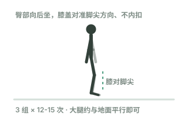

学习园地矢量图升级对比（以"深蹲"为例）
两张图的动作演示、教学标注完全相同，仅视觉层升级
现有版本

火柴人 · 白底
升级版本
 暖色场景 · 光影 · 玻璃卡片
暖色场景 · 光影 · 玻璃卡片
升级版做了什么：暖色渐变场景 + 柔光光斑、加粗渐变肢体（胶囊形）+ 头部黏土质感高光、
远近肢体双色制造纵深、随下蹲呼吸缩放的地面影子、悬浮粒子、磨砂玻璃要点卡片（上下轻浮动）。
保留了：深蹲动作演示动画、"膝对脚尖"教学标注、组数建议 —— 教学功能不受影响。
说明：参考图是 3D 建模渲染的黏土风格，纯 SVG 无法 100% 复刻其材质；此方案是在保持
SVG 轻量（几十 KB、无需外部资源）前提下能达到的最接近风格。若满意，可按此风格升级全部 18 张图。